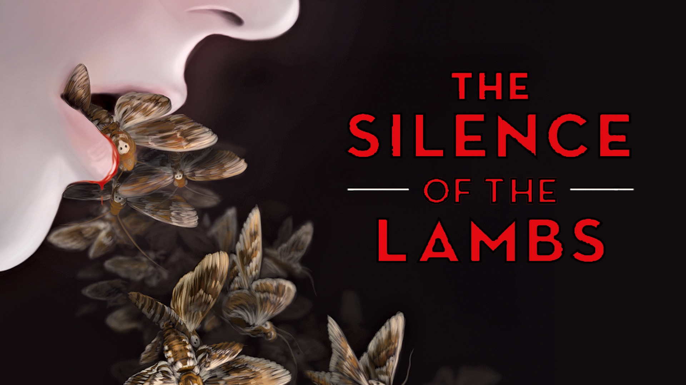

Книги


Оригинальное название книги - Молчание ягнят. По мотивам этой книги было снято много фильмов, в том числе и с великолепным актером - Энтони Хоппкинсом, который смог передать все самое важное, что было у книжного Ганнибала Лектора.
Однако это не единственная книга про доктора Ганнибала Лектора. Автор написал три книги про него: Молчание ягнят, Красный дракон, Ганнибал, Ганнибал: Восхлждение
Каждая из книг вмещает в себя очень интересный и захватывающий сюжет. Некоорые книги явля.тся сиквелом, а некоторые - приквелом к первой книге Молчание ягнят. В любом случае, данные я рекомендую данные произведения к прочтению.